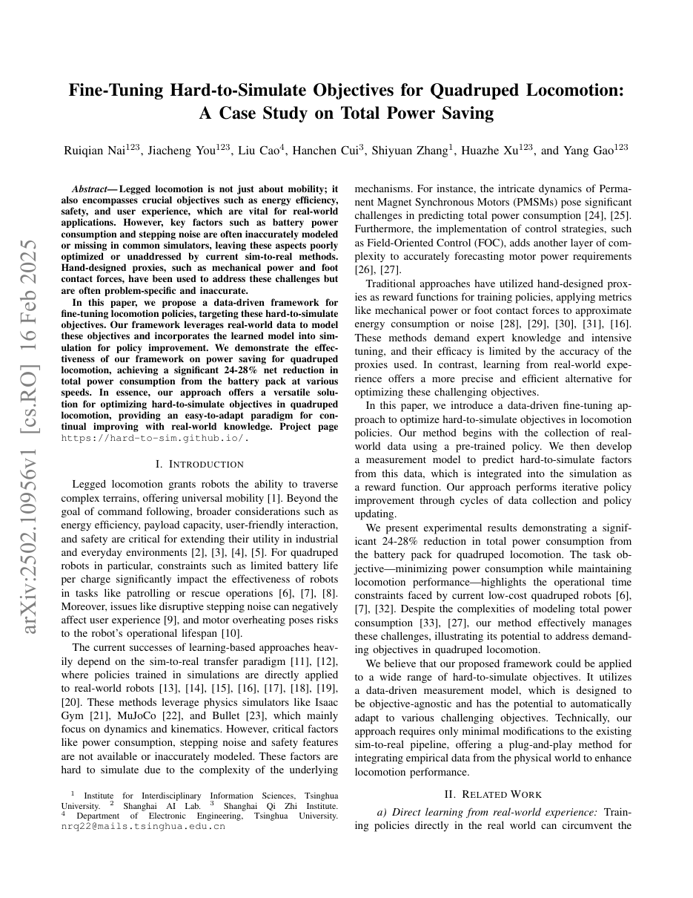

| 标题 | Fine-Tuning Hard-to-Simulate Objectives for Quadruped Locomotion: A Case Study on Total Power Saving （针对难仿真目标微调四足运动策略——以总功耗节省为案例研究） |
| 作者 | Ruiqian Nai、Jiacheng You、Liu Cao、Hanchen Cui、Shiyuan Zhang、Huazhe Xu、Yang Gao（corresponding） |
| 单位 | 清华大学（Tsinghua University），交叉信息研究院（IIIS）/ 电子工程系；上海人工智能实验室（Shanghai AI Lab）；上海期智研究院（Shanghai Qi Zhi Institute） |
| 发表会议 | IEEE ICRA 2025（International Conference on Robotics and Automation），2025年5月19-23日，美国亚特兰大，pp. 15957–15964 |
| DOI / 链接 | 10.1109/ICRA61961.2025.11128263 | arXiv: 2502.10956 | Project: hard-to-sim.github.io | Submitted: 2025-02-16 |
| 一句话概述 | 提出一个数据驱动的迭代微调框架，针对物理仿真器中难以精确建模的机器人真实目标（如电池总功耗、步态噪声、电机发热）进行策略优化。核心思路：用真实机器人采集数据训练 LSTM 测量模型预测总电流，将该模型嵌入仿真器作为奖励函数，利用 KL 散度约束 + 层级策略选择，经多轮迭代实现四足机器人（Unitree Go1）电池总功耗净降低 24–28%（vs 手工解析 proxy 的 5–12%）。框架通用性强——可扩展到任何"现实中有但仿真中没有"的目标。 |
| 灵感来源 | → 启发产生的洞察 | 类型 |
|---|---|---|
| 传统 sim-to-real 中 domain randomization 只能处理"仿真不准"——无法处理"仿真根本没有"的量 | → 对于电池总功耗这种在仿真器中完全缺失的量，domain randomization 完全无能为力——需要一个从真实数据中学习的测量模型来"补全"仿真器的盲区 | 问题定义 |
| Offline RL / model-based RL 中的"学习世界模型"范式 | → 不是学习整个动力学世界模型（太复杂且不必要），而是只学习目标相关的测量模型——将高维状态映射到一个标量（功耗）。这是"最小必要模型"思路：学得越少，需要的数据越少，泛化越可靠 | 方法 |
| Trust-region policy optimization（TRPO）和 PPO 中的 KL 散度约束 | → 将 KL 散度从一个"稳定训练"的工具升级为一个"防止策略利用 surrogate 漏洞"的安全约束——策略不能偏离 anchor 太远，因为 surrogate 在远离数据采集分布的地方预测不可靠 | 数学 / 安全 |
| DAgger (Dataset Aggregation) 和 evolutionary strategies 中的精英选择 | → 每轮迭代都聚合所有历史真实数据来改进模型（DAgger 思路），同时通过"仿真 Top-K → 真实评估最优"的层级筛选来降低真实世界测试次数（evolutionary 思路），将两个互补的方法融合在一个框架中 | 架构 |
flowchart TB
subgraph INIT["Phase 0: Initialization"]
PRETRAIN["Pre-trained locomotion policy pi0
standard sim reward: velocity tracking etc."]
DEPLOY0["Deploy pi0 on Unitree Go1
record tau, q_dot, i triples"]
end
subgraph LOOP["Iterative Fine-Tuning Loop"]
direction TB
subgraph MODEL["Step 1: Update Measurement Model"]
AGGREGATE["Aggregate all historical data D"]
TRAIN_LSTM["Train LSTM: i_hat = f(tau, q_dot)
MSE loss with normalization"]
end
subgraph FINE_TUNE["Step 2: Simulation Fine-Tuning"]
EMBED["Embed LSTM in simulator
reward: r = r_sim + lambda * (-i_hat)"]
KL_CONSTRAINT["KL(pi || pi_anchor) <= c
sweep lambda in {0.5,1,5}, c in {0.2,0.5,1}"]
PPO_TRAIN["PPO trains candidate policies"]
end
subgraph SELECT["Step 3: Hierarchical Selection"]
SIM_RANK["Sim ranking with surrogate
select Top-6 elites"]
REAL_TEST["Real robot test Top-6
measure true power P_real"]
BEST_PICK["Pick best real performer pi*
as next-round anchor"]
end
subgraph UPDATE["Step 4: Data Aggregation"]
ADD_DATA["Add new real test data to D"]
NEXT_ANCHOR["Set pi_anchor = pi*
go to next iteration"]
end
MODEL --> FINE_TUNE --> SELECT --> UPDATE --> MODEL
end
subgraph OUTPUT["Final Output"]
FINAL["Optimal policy after 3-4 iterations
24-28% net power reduction"]
end
INIT --> LOOP
LOOP --> OUTPUT
classDef init fill:#fef7ed,stroke:#f59e0b,stroke-width:2px,color:#92400e
classDef model fill:#e8f0fe,stroke:#3b82f6,stroke-width:2px,color:#1d4ed8
classDef tune fill:#f0ebfd,stroke:#8b5cf6,stroke-width:2px,color:#6d28d9
classDef select fill:#e6f7ee,stroke:#10b981,stroke-width:2px,color:#047857
classDef update fill:#ffe4e6,stroke:#f43f5e,stroke-width:2px,color:#be123c
classDef final fill:#dbeafe,stroke:#2563eb,stroke-width:2px,color:#1e40af
class PRETRAIN,DEPLOY0 init
class AGGREGATE,TRAIN_LSTM model
class EMBED,KL_CONSTRAINT,PPO_TRAIN tune
class SIM_RANK,REAL_TEST,BEST_PICK select
class ADD_DATA,NEXT_ANCHOR update
class FINAL final
flowchart LR
subgraph REAL["Real World (Unitree Go1)"]
direction TB
DEPLOY["Deploy current policy pi_k"]
MEASURE["Measure: motor state and battery current i_real"]
STORE["Store triples into dataset D"]
end
subgraph MODEL_WORLD["Measurement Model Training"]
direction TB
NORMALIZE["Data normalization"]
LSTM_TRAIN["LSTM training: i_hat = f(tau, q_dot)"]
OUTPUT_MODEL["Measurement model M_k"]
end
subgraph SIM_WORLD["Simulation Optimization"]
direction TB
REWARD["Combined reward: r = r_sim + lambda * (-i_hat)"]
KL_PENALTY["KL constraint: Dist(pi, pi_anchor) <= c"]
PPO_UPDATE["PPO policy update"]
end
subgraph FILTER["Hierarchical Filter"]
direction TB
TOP6["Sim Top-6 ranked by surrogate"]
REAL_EVAL["Real evaluation of Top-6"]
BEST["Select best pi* as next anchor"]
end
REAL -->|"tau, q_dot, i"| MODEL_WORLD
MODEL_WORLD -->|"M_k"| SIM_WORLD
SIM_WORLD -->|"candidates"| FILTER
FILTER -->|"pi*, new data"| REAL
classDef real fill:#fef7ed,stroke:#f59e0b,stroke-width:2px,color:#92400e
classDef model fill:#e8f0fe,stroke:#3b82f6,stroke-width:2px,color:#1d4ed8
classDef sim fill:#f0ebfd,stroke:#8b5cf6,stroke-width:2px,color:#6d28d9
classDef filter fill:#e6f7ee,stroke:#10b981,stroke-width:2px,color:#047857
class DEPLOY,MEASURE,STORE real
class NORMALIZE,LSTM_TRAIN,OUTPUT_MODEL model
class REWARD,KL_PENALTY,PPO_UPDATE sim
class TOP6,REAL_EVAL,BEST filter
flowchart TD
subgraph PHASE1["Phase 1: Pre-training and Baseline"]
direction LR
P1["Pre-train locomotion policy
with standard sim rewards"] --> P2["Deploy on real robot
record baseline power"]
P2 --> P3["Train initial LSTM model
i_hat = f(tau, q_dot)"]
end
subgraph PHASE2["Phase 2: Iterative Fine-Tuning"]
direction LR
I1["Iter 1: Embed LSTM, sweep
lambda and c, PPO training"] --> I2["Iter 1: Sim Top-6, real test
pick best pi*_1"]
I2 --> I3["Iter 2: Update LSTM, sweep
and fine-tune again"]
I3 --> I4["Iter 3: Continue until
convergence or budget"]
end
subgraph PHASE3["Phase 3: Final Evaluation"]
direction LR
E1["Multi-speed: 0.5/0.8/1.1 m/s
net power vs baseline"]
E2["Behavior analysis: torque
smoothness, foot placement"]
E3["Outdoor long-distance test
battery endurance"]
end
PHASE1 -->|"initial LSTM"| PHASE2
PHASE2 -->|"optimal policy"| PHASE3
classDef phase1 fill:#fef7ed,stroke:#f59e0b,stroke-width:2px,color:#92400e
classDef phase2 fill:#e8f0fe,stroke:#3b82f6,stroke-width:2px,color:#1d4ed8
classDef phase3 fill:#e6f7ee,stroke:#10b981,stroke-width:2px,color:#047857
class P1,P2,P3 phase1
class I1,I2,I3,I4 phase2
class E1,E2,E3 phase3
| 类别 | 内容 | 维度 |
|---|---|---|
| 输入（策略） | 机器人本体感知状态（关节角度/速度、IMU、基座速度）+ 用户速度指令 $v_{\text{cmd}}$ | ~60 维观测（Unitree Go1: 12 关节） |
| 输出（策略） | 12 个关节目标位置（由 PD 控制器跟踪）→ 行走步态 | 12 维动作空间 |
| 优化目标 | 最小化电池总功耗（电流积分），同时保持速度跟踪精度 | 在 0.5–1.1 m/s 速度下净功耗降低 24–28% |
| 测量模型输入 | 电机扭矩 $\tau_t$ 和角速度 $\dot{q}_t$（仿真中已知） | 24 维（12 关节 × 2） |
| 测量模型输出 | 预测的电池总电流 $\hat{i}_t$（真实电流的 surrogate） | 1 维标量 |
这是一个 sim-to-real 策略优化问题，但与传统的 domain randomization 不同（后者解决"仿真器不准"），本文解决的是"仿真器中完全不存在"的目标量。该任务位于 model-based RL 与迭代学习的交汇处：从真实数据中学习一个局部世界模型（只建模目标指标，而非完整动力学），用它来指导仿真中的策略搜索，再用真实世界测试来修正和更新模型。平台：Unitree Go1 四足机器人（12 自由度，约 12 kg），场景：平地行走 + 室外长距离测试，核心指标：电池总功耗净降低百分比。
| 先前方法 | 核心思想 | 为何对难仿真目标失效 |
|---|---|---|
| 手工设计的解析 Proxy | 使用物理公式，例如 $\sum \max(\tau_i \dot{q}_i + \frac{r}{k^2}\tau_i^2, 0)$（机械功率 + 焦耳热） | （1）每个目标都需要领域专家设计；（2）无法捕捉 FOC 驱动损耗、电池内阻、待机功耗；（3）可能给出错误的梯度方向——解析 proxy 仅节省 5–12% 净功耗，而本文方法达 24–28% |
| Domain Randomization | 随机化仿真中的物理参数，使策略对参数变化具有鲁棒性 | 核心问题：只能处理仿真中"存在但不准确"的量，无法处理"根本不存在"的量。电池电流在 Isaac Gym 中根本不存在——无论怎么随机化也无法生成它。 |
| 系统辨识 + 高保真仿真器 | 通过实验测量机器人参数，构建更精确的仿真模型 | （1）耗费大量人力——每台机器人都需重新辨识；（2）许多过程（FOC 动力学、电池老化）无法用简单参数化模型捕捉；（3）总会不断出现新的"难仿真"目标 |
| 纯真实世界 RL | 直接在真实机器人上运行 RL，从真实数据中学习 | （1）样本效率极低——数千个 episode 不可行；（2）安全隐患——探索可能导致摔倒；（3）无并行性——只能在单台机器人上串行采集数据 |
本方法是一个四步迭代框架，每一步都有清晰的理论依据和工程考量。以下逐组件进行公式化拆解。
LaTeX 渲染由 MathJax 支持。显示公式使用 $$...$$，行内公式使用 $...$。
| 参数 | 取值 | 含义 | 为什么取这个值 |
|---|---|---|---|
| 功耗奖励权重 $\lambda$ | {0.5, 1, 5} | 控制省电 vs 完成任务之间的权衡 | 太小 → 不够省电；太大 → 可能牺牲速度跟踪。网格扫描找到最优平衡 |
| KL 散度上限 $c$ | {0.2, 0.5, 1} | 策略偏离 anchor 的最大允许程度 | 太小 → 没有改进空间；太大 → 可能进入 surrogate 的 OOD 区域 |
| 精英策略数量 | Top-6 | 每轮用于真实测试的候选策略数 | 太少 → 可能漏掉好策略；太多 → 测试成本高。6 是一个平衡选择 |
| 迭代轮数 | 3–4 | 框架的总轮数 | 3 轮后观察到了饱和——策略和测量模型均接近收敛 |
| LSTM 输入维度 | 24 | 12 关节 × 2（扭矩 + 速度） | 信息量最大且仿真可靠性最高的最小特征集 |
| RL 算法 | PPO | Proximal Policy Optimization | PPO 通过 clipping 原生支持 trust-region，与 KL 约束天然兼容 |
理解本文需要把握三大核心原理：（1）为什么数据驱动 surrogate 优于手工 proxy——信息论视角；（2）为什么 KL 散度约束能防止策略 exploit——信任域优化视角；（3）为什么层级选择加数据聚合能实现高效闭环学习——主动学习视角。
手工 proxy 只利用了 ($\tau, \dot{q}$) 信息量的"主成分"，而 LSTM 学会了利用完整的"非线性流形"——包含电机效率曲面、FOC 开关模式、电池放电曲线。
每次更新后，检查 $\mathbb{E}[D_{\text{KL}}(\pi \parallel \pi^{\text{anchor}})]$。如果超过阈值 $c$，减小更新步长（类似于 TRPO 的 line search）直到满足约束。这防止了如"大步幅、低频"突变为"小步幅、高频"这样的剧烈变化。
为什么扫描 $c \in \{0.2, 0.5, 1\}$？不同的 $c$ 值对应不同的"探索半径"，为每个阶段找到最优的探索-利用平衡。
Reward hacking 示例：PPO 可能发现一种步态：扭矩极大但速度接近零（$\tau_i \gg 0, \dot{q}_i \approx 0$）。LSTM 从未见过这种组合——可能预测极低功耗。但实际中，虽然机械功率低，但电机堵转电流巨大 → 真实功耗其实非常高。KL 约束阻止了这种 OOD 跳跃，因为与正常行走策略的行为差异太大。
📷 论文截图。图片保存于 figures/ 子目录中。

📷 Please save screenshot asfigures/overview.png该图展示了完整的迭代微调框架。左侧：真实世界——将策略部署在 Unitree Go1 上，采集真实数据。中间：测量模型——在累积数据上训练 LSTM。右侧：仿真——将 LSTM 嵌入为奖励，在 KL 约束下微调，参数扫描产生候选策略。底部：层级选择——仿真 Top-6 在真实机器人上评估，最优者成为下一轮 anchor。
figures/exp_power_comparison.png展示了三个速度下的归一化电池总功耗：
figures/exp_iteration.png展示了各轮迭代（第 1 轮 → 第 2 轮 → 第 3 轮）中的协同进化：
figures/exp_behavior.png展示了解释 24–28% 省电效果的行为变化：
| 数据问题 | 难度分析 | 严重程度 |
|---|---|---|
| 电流传感器噪声 | ~几 mA 噪声。高采样率（>100 Hz）可通过时间平均抑制噪声 | ★★ |
| 放电过程中电池电压衰减 | 电压从 ~25.2V 降至 ~22.2V → 相同机械功率需要更高电流。若电池状态变化过大，模型需要更新 | ★★★ |
| 环境温度对电机效率的影响 | 电机电阻每升高 1°C 增加 ~0.4% → 相同扭矩需要更高电流。室内训练的 LSTM 在室外可能存在系统性偏差 | ★★★ |
| 不同机器人个体的制造差异 | 不同 Go1 个体的电机效率和关节摩擦略有差异。在一台机器人上训练的模型用于另一台可能需要适配数据 | ★★★★ |
| 参考文献 | 为什么重要 |
|---|---|
| Rudin et al. (2022) — Advanced Skills by Learning Locomotion. Science Robotics | 在复杂地形上使用 PPO sim-to-real 训练 ANYmal 的 SOTA 工作，但未解决难仿真目标。本文是其下一步：学会了走之后，学会高效地走 |
| Hwangbo et al. (2019) — Learning Agile and Dynamic Motor Skills. Science Robotics | 首个 PPO sim-to-real 四足运动工作。使用 actuator network 建模电机动力学——思路与本文 LSTM 类似，但需要手工建模。本文的 LSTM 完全从数据中学习 |
| Peng et al. (2020) — Learning Agile Locomotion via Adversarial Imitation. RSS | 模仿学习 + RL，使用动物运动捕捉数据。关注运动质量（自然度），本文关注运动效率（功耗）——互补维度 |
| Ross et al. (2011) — DAgger. AISTATS | 经典迭代数据聚合方法。本文"保留所有历史数据"的设计源于 DAgger，防止分布偏移退化 |